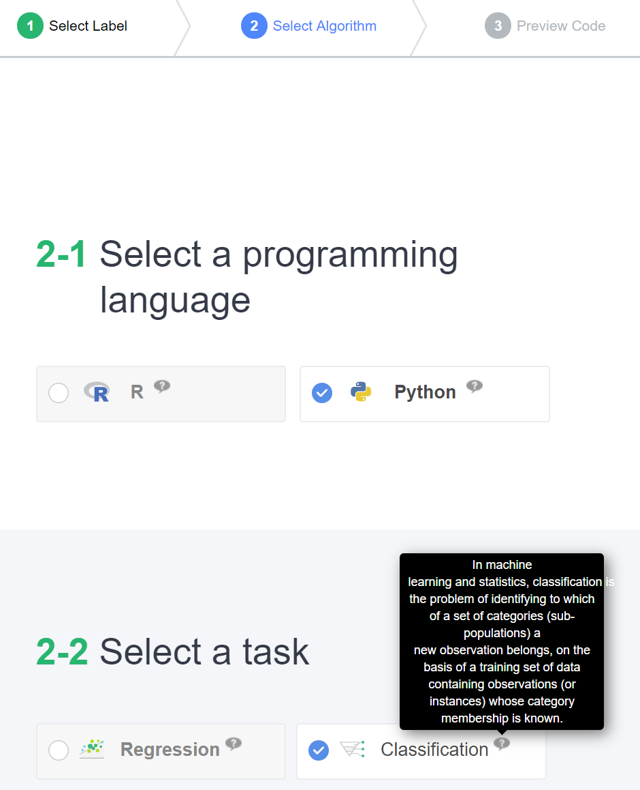

Easy Analysis는 기구축된 기계학습 데이터를 이용하여 기계학습 모델을 생성해 볼 수 있는 손쉬운 인터페이스를 제공합니다. 모델 생성을 위한 프로그래밍 언어로 R, Python을 지원하며 Random Forest, Support Vector Machine 등 전통적인 기계학습 알고리즘 부터 Deep Learning까지 사용자가 원하는 구성에 따라 프로그래밍 코드를 생성할 수 있습니다. 데이터 분석을 위한 Histogram, Box Plot 등의 가시화 코드 블럭 또한 생성해 볼 수 있습니다. 만들어진 기계학습 모델의 성능 평가를 위한 자동화된 코드 블럭도 제공됩니다.
Easy Analysis
Analysis의 - Easy Analysis 를 클릭하여 이동합니다.
Easy Analysis
최근 업로드된 인공지능 데이터셋 리스트 팝업에서 원하는 데이터셋을 검색하여 선택할 수 있습니다. 이 예제에서는 잘 알려진 기계학습 데이터셋인 Iris 데이터를 선택하였습니다.
Dataset Popup
프로그래밍 코드 생성 순서는 다음과 같습니다. (1) 레이블 선택, (2) 알고리즘 선택, (3) 코드 미리보기
(1) 레이블 선택
먼저 예측 대상(y)이 되는 항목을 선택합니다. Species 종 을 선택합니다.
Select Label
학습에 불필요한 ID 항목을 제외하고 꽃잎의 길이, 폭 정보들이 포함된 나머지 항목(X)들을 선택합니다.
Select Feature List
전체 데이터 중 학습(train)에 사용할 데이터와 평가(test)에 사용할 데이터를 분리하는 비율을 설정합니다. TRAIN 80% / TEST 20% 를 선택한 경우, Iris 데이터의 총 인스턴스는 150개 이므로 이 중 120개의 데이터는 모델 학습에 사용되고 나머지 30개의 데이터는 모델에 학습되지 않고 평가에만 활용됩니다. 아래의 Random, Sequential 항목의 선택을 통해 데이터셋 분리를 인스턴스 id 순서에 따라 나눌지 랜덤하게 수행할지 여부를 결정합니다.
우측 하단의 Next버튼을 클릭하여 다음 단계로 진행합니다.
Select Train/Test Ratio
(2) 알고리즘 선택
원하는 프로그래밍 언어를 선택하고 수행할 태스크를 선택합니다. 이 예제에서, Iris 데이터는 꽃의 종을 예측하는 분류 문제이므로 Classification을 선택합니다. 만일 집 값 예측과 같이 특정 값을 예측하는 문제라면 Regression을 선택합니다.
각 선택 항목의 (?) 표시에 마우스를 올려두면 해당 선택지의 의미를 설명해주는 메뉴얼 페이지가 팝업됩니다.
Select Algorithm
원하는 알고리즘을 선택하고 해당 알고리즘에 필요한 파라미터 정보를 입력합니다. Classification 문제의 경우 Support Vector Machine, Random Forest, AdaBoost, Deep Learning 4종의 알고리즘이 지원됩니다.
Select Algorithm Detail
데이터 분석을 위한 가시화 블럭들을 선택합니다. 개발된 모델의 성능 평가를 위한 지표들도 선택할 수 있습니다.
Next 버튼을 눌러 프로그래밍 코드를 생성합니다.
Select Algorithm Detail2
(3) 코드 미리보기
자동 생성된 프로그래밍 코드는 Web IDE 형태로 보여지게 됩니다. Launch Jupyter Notebook을 클릭하면 해당 코드 및 데이터셋이 사용자의 개발 환경에서 생성되어 직접 구동해볼 수 있습니다.
Preview Code